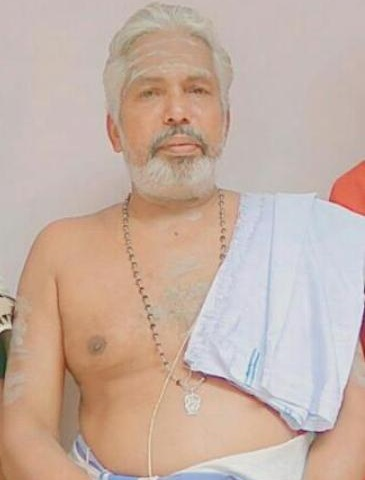

സ്വാമിയേ ശരണമയ്യപ്പാ
മലപ്പുറം ജില്ലയിലെ കാലടിയിൽ ദേശത്തിനകമാനം സർവ്വൈശ്വര്യങ്ങളും പ്രദാനം ചെയ്ത് വിളങ്ങിനിന്ന ക്ഷേത്രമായിരുന്നു ഉദയഞ്ചേരി ശ്രീ അയ്യപ്പൻകാവ് . നൂറ്റാണ്ടുകൾക്ക് മുമ്പ് ഇവിടെ വസിച്ചിരുന്ന പാമ്പില്ലത്ത് മനക്കാരുടെ കുടുംബക്ഷേത്രമായിരുന്നു ഈ ക്ഷേത്രം . പല പല ദുരാചാരങ്ങളിൽപെട്ട് ഇല്ലാംതന്നെ നശിച്ചുപോയതോടെ ക്ഷേത്രം മറ്റുചിലരുടെ അധീനതയിലായി . യഥാവിധി പൂജാപരിപാലനങ്ങളില്ലാതെ പിന്നീട് ക്ഷേത്രം തന്നെ നശിക്കപ്പെട്ടു . ക്ഷേത്രസ്വത്തുക്കൾ നഷ്ട്ടപെട്ടു , ക്ഷേത്രഭൂമി അന്യാധീനമായി . പൂർണമായും നശിക്കപ്പെട്ടു കിടന്നിരുന്ന ദേവസ്ഥാനത് ചുറ്റുവട്ടത്തുള്ളവർ വിലക്ക് തെളിയിക്കുവാൻ തുടങ്ങിയതോടെ മറഞ്ഞുകിടന്ന ചൈതന്യം വീണ്ടടുക്കപ്പെടുകയായിരുന്നു . തുടർന്ന് ക്ഷേത്രം പുനർനിർമിക്കപ്പെടണമെന്ന ആവിശ്യം നാട്ടുകാരിൽനിന്നു തന്നെ ഉയർന്നുവരികയും ദേവസ്ഥാനത് ഒരു അഷ്ടമംഗല്യപ്രശ്നം നടത്തുകയും ഉണ്ടായി .2011 ഫെബ്രുവരി 4 ന് നടന്ന ദേവപ്രശ്നത്തിൽ കൂറ്റനാട് രാവുണ്ണിപ്പണിക്കർ ,പാറപ്പുറം ഹരിദാസപണിക്കർ ,എടപ്പാൾ സി.വി. ഗോവിന്ദൻ മാസ്റ്റർ എന്നീ ജോതിഷികളും തന്ത്രി ശ്രീ കാലടി കൈനിക്കര തെക്കേടത്ത് ശങ്കരനാരായണൻ നമ്പൂതിരിപ്പാടും സന്നിഹിതരായിരുന്നു .

Administrator
+918086540604
Mealshanthi
+917034944552

Thanthri
Thanthri